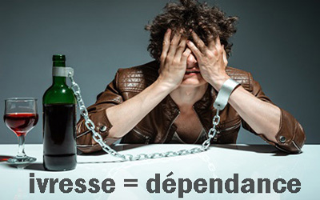

L’alcool ou alcool éthylique est une substance psychoactive issue de la fermentation ou de la distillation de fruits ou de grains riches en sucres. À ce titre, l’alcool est capable de modifier le comportement, les humeurs et les perceptions de ses utilisateurs.
De plus, l’alcool est un produit psychoactif dont l’utilisation chronique (sur une longue période) peut entraîner une dépendance, on parlera alors d’alcoolodépendance ou d’Alcoolisme chronique
L’alcoolodépendance est définie comme une addiction à l’alcool, c’est-à-dire le besoin, l’envie compulsive, la nécessité pour une personne de boire de l’alcool associés à l’incapacité pour le sujet d’assurer ses tâches quotidiennes. Cependant, tous les consommateurs d’alcool ne sont pas dépendants à cette substance. On discerne plusieurs usages allant de l’usage simple à la dépendance. Pour chacun de ces usages, il existe une approche de prévention afin d’éviter que le consommateur ne rentre dans une phase d’alcoolodépendance.
